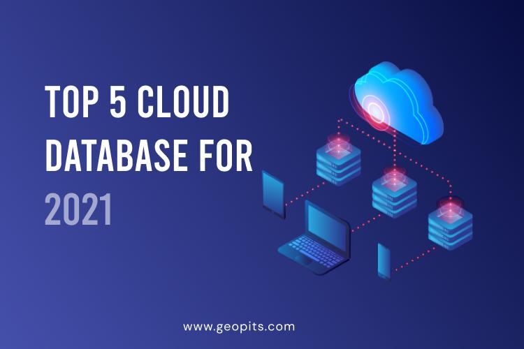

Configure Quorum on non domain environment
This article outlines how to configure Quorum on non domain environment

There is increased adoption of cloud-based database management systems today. This move is triggered more due to digital transformation shifts accelerated by remote work and the ongoing COVID-19 pandemic.
Cloud databases are databases that are built, deployed, and accessed through a cloud environment — private, public, or hybrid cloud. Organizations can build, and run scalable new applications in a modern dynamic cloud environment, while they have the choice to move their existing databases to the cloud. Users have the option to run cloud databases independently on the cloud with either virtual-machine images or by purchasing access to database services from cloud database service providers.
According to Gartner, “By 2022, 75% of all databases will be deployed or migrated to a cloud platform, with only 5% ever considered for repatriation to on-premises. This trend will largely be due to databases used for analytics, and the SaaS model.” The five most in-demand and beneficial cloud database vendors: Microsoft Azure SQL Database, Amazon Web Services (AWS), Oracle autonomous database (ATP), IBM DB2 for Cloud, and Google Cloud Spanner.

Microsoft’s Azure SQL Database offers many other value-added features in addition to managed Database-as-a-Service. Users can access SQL databases on Microsoft cloud or on hosted servers on other virtual machines.
Azure SQL can improve business databases by providing easy and flexible options to migrate your existing applications in the cloud or build new ones. Built on the SQL server engine available on-premises, you gain consistent experience across your portfolio. For organizations that are already using Microsoft SQL Server, Azure is the most preferred cloud database, as they can easily migrate to the cloud.

Amazon offers a number of cloud database services that includes NoSQL as well as relational databases. Amazon Aurora is a massively scalable, MySQL and PostgreSQL-compatible relational database service re-imagined for the cloud. All your code, tools and applications that you use with your existing MySQL and PostgreSQL databases can be run seamlessly without requiring changes to most of your existing applications.

Oracle ATP, a self-driving, self-securing, self-repairing database service, is built for transactional workloads. One of the key features is that it can instantly scale to meet demands of mission-critical transactions and mixed workload applications. It helps automate the provisioning, configuring, tuning, scaling, patching, encrypting, and repairing of databases.
Gartner ranks Oracle Autonomous Transaction Processing #1 for critical capabilities in the 2020 Gartner Critical Capabilities for Cloud Database Management Systems.

IBM Db2 on Cloud is a fully-managed SQL cloud relational database that offers advanced data management and analytics capabilities, making data available anywhere for deeper insights. Supported across Linux, Unix, and Windows, IBM DB2 offers a next-generation, hybrid multi-cloud platform, advanced data and AI capabilities, and deep enterprise expertise across 20 industries. Db2 on Cloud can be deployed on IBM Cloud and Amazon Web Services (AWS).

Google Cloud Spanner is a fully managed, clustered relational database system that offers the scalability of a NoSQL database while maintaining the SQL capability, ACID transactions, and SQL semantics. It offers the internal Google Spanner service used by AdWords, Google Play, and about 5,000 other Google services and databases.
Cloud databases are extremely popular, as it enables organizations to host databases without any IT complexities and operational costs. Easy to access through a web interface or API, there is no hassle of licensing, maintenance, resource allocation, and installation.
Although we have listed 5 popular cloud databases for 2021, there are many others when it comes to open-source and free databases. Therefore, it is important to select the best cloud database depending on the industry-specific requirements.
Still wondering how to choose the right DB for your business? Schedule a free consultation now with GeoPITS.